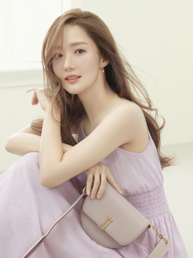
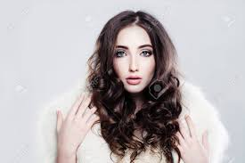
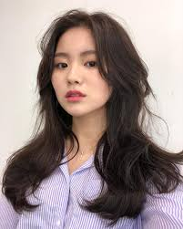
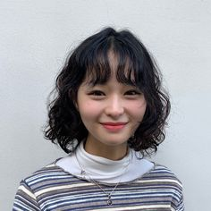

1.몸 관리:꾸준한 운동을 통해 몸매 관리!
2.피부 관리: 화장 꼭 지우고 자고 로션 잘바르기
3.화장
3-1.피부 케어: 메이크업을 시작하기 전에 피부를 깨끗하게 세정하고 적절한 보습을 제공하여
피부 상태를 최적화하세요. 토너와 보습 크림을 사용하여 피부를 준비하세요.
3-2베이스 메이크업: 파운데이션이나 BB 크림 등의 베이스 메이크업 제품을 사용하여 피부 톤을
고르게 맞추고 피부 결점을 커버하세요. 더 자연스러운 결과를 원한다면 가벼운 커버력의 제품을 선택해요.
3-3얼굴 메이크업: 쉐이딩, 하이라이팅, 블러셔를 사용하여 얼굴을 조형하고 더욱 생동감 있게
만드세요. 쉐이딩은 얼굴의 윤곽을 부각시키고, 하이라이팅은 얼굴의 높은 부분을 강조합니다. 블러셔는 건강한 빛을
더해줍니다.
3-4눈 메이크업: 아이섀도우, 아이라이너, 마스카라를 사용하여 눈을 강조하세요. 아이섀도우는
눈을 꾸미고 돋보이게 만들어 줍니다. 아이라이너는 눈을 더 크고 선명하게 만들어 줍니다. 마스카라는 속눈썹을 길고 진하게 보이게 해줍니다.
3-5입술 메이크업: 립스틱, 립 라이너, 립 글로스 등을 사용하여 입술을 강조하세요. 입술의
모양을 정확히 그리고 채우는 데 립 라이너를 사용하고, 원하는 색상의 립스틱이나 립 글로스를 바르세요.
픽스링 스프레이: 마지막으로 메이크업을 고정시키기 위해 픽스링 스프레이를 사용하여 메이크업을
오래 유지하세요.
4.머리 스타일:
4-1:각진 스타일은 S컬을 주어 볼륨감있게 보이자

4-2 동근형얼굴은 이마를 드러내어 길어 보이게하자.

4-3긴 얼굴형은 옆머리에 S컬을 주어 옆에가 풍성해 보이게 하자

4-4 마름모형은 굵은 웨이브펌이나 단발히피펌으 부드러워 보이게하자

5.옷 스타일:이것도 커스텀이 더 중요하다고 생각한다
6-1. 마른스타일: 가로 스트라이프 옷,박스티
6-2.뚱뚱한 스타일: 세로 스트라이프옷, 올블랙
피해야할것: 너무큰 박스티-더 부해보임
6-3:밝은 계열피부:화사한 색이 잘어울림 하얀색,밝은색 계열
6-4 어두운 피부: 단색(회색,검정,하양),
피해야할것:밝은색톤 옷